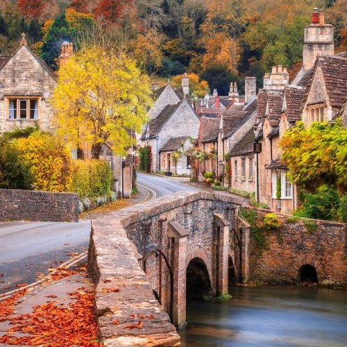
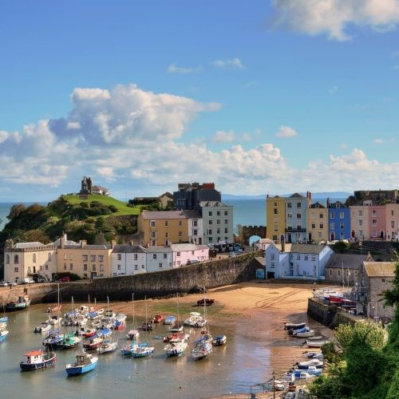

|  |
CASTLE COMBECastle Combe is a picturesque village situated in the Cotswolds, near the large market town of Chippenham. Castle Combe is best known for the beautiful view of the By Brook in the centre of the village with a row of pretty old-fashioned houses behind. Although the village is small, it has plenty of pubs, hotels and cafe's, allowing you to enjoy a great day out or to stay a night. It even has its own race track nearby! Tripadvisor: 4/5 Stars Coordinates: 51.492, -2.229 |
|  |
TENBYTenby is a gorgeous harbour town and resort in Pembrokeshire, Southwest Wales. It makes up part of the Pembrokeshire Coast National Park. Tenby is known for it's multicoloured houses overlooking the harbour, its sandy beaches and its 13th-century town walls and castle ruins. Tenby has a train station and lots of pubs, hotels, shops, cafes and restaurants. With its scenic setting, historic ruins and beautiful beaches, Tenby really is a perfect holiday destination. Tripadvisor: 4.5/5 Stars Coordinates: 51.672, -4.701 |